✿ ✿ ✿ ✿ ✿ ✿ ✿ ✿ ✿ ✿ ✿ ✿ ✿ ✿ ✿ ✿ ✿ ✿ ✿ ✿ ✿ ✿ ✿ ✿ ✿
✿ ✿ ✿ ✿ ✿ ✿ ✿ ✿ ✿ ✿ ✿ ✿ ✿ ✿✿✿✿ ✿ ✿ ✿ ✿ ✿ ✿ ✿ ✿
✿ ✿ ✿ ✿ ✿ ✿ ✿ ✿ ✿ ✿ ✿ ✿ ✿ ✿ ✿ ✿ ✿ ✿ ✿ ✿ ✿ ✿ ✿ ✿ ✿ ✿ ✿ ✿ ✿ ✿ ✿ ✿ ✿ ✿ ✿ ✿ ✿ ✿ ✿ ✿ ✿ ✿ ✿ ✿ ✿ ✿ ✿ ✿ ✿ ✿
✿ ✿ ✿ ✿ ✿ ✿ ✿ ✿ ✿ ✿ ✿ ✿✿ ✿ ✿ ✿ ✿ ✿ ✿ ✿ ✿ ✿ ✿ ✿ ✿ ✿ ✿ ✿ ✿ ✿ ✿ ✿ ✿ ✿ ✿ ✿ ✿ ✿ ✿ ✿ ✿ ✿ ✿ ✿ ✿ ✿ ✿ ✿ ✿ ✿
✿ ✿ ✿ ✿ ✿ ✿ ✿ ✿ ✿ ✿ ✿ ✿ ✿ ✿ ✿ ✿ ✿ ✿ ✿ ✿ ✿ ✿ ✿ ✿ ✿ ✿ ✿ ✿ ✿ ✿ ✿ ✿ ✿ ✿ ✿ ✿ ✿ ✿ ✿ ✿ ✿ ✿ ✿ ✿ ✿ ✿ ✿ ✿ ✿ ✿
✿ ✿ ✿ ✿ ✿ ✿ ✿ ✿ ✿ ✿ ✿ ✿ ✿ ✿ ✿ ✿ welcome to hand coding round robin ✿ ✿ ✿ ✿ ✿ ✿ ✿ ✿ ✿ ✿ ✿ ✿ ✿ ✿
✿ ✿ ✿ ✿ ✿ ✿ ✿ ✿ ✿ ✿ ✿ ✿ ✿ ✿ ✿ ✿ ✿ ✿ ✿ ✿
✿ ✿ ✿ ✿ ✿ ✿ ✿ ✿ ✿ ✿ ✿ ✿ ✿ ✿ ✿ ✿ ✿ ✿ ✿ ✿ ✿ ✿ ✿ ✿ ✿ ✿ ✿ ✿ ✿ ✿ ✿ ✿ ✿ ✿ ✿ ✿ ✿ ✿ ✿ ✿ ✿ ✿ ✿ ✿ ✿ ✿ ✿ ✿ ✿ ✿
✿ ✿ ✿ ✿ ✿ ✿ ✿ ✿ ✿ ✿ ✿ ✿ ✿ ✿ ✿ ✿ ✿ ✿ ✿ ✿ ✿ ✿ ✿ ✿ ✿ ✿ ✿ ✿ ✿ ✿ ✿ ✿ ✿ ✿ ✿ ✿ ✿ ✿ ✿ ✿ ✿ ✿ ✿ ✿ ✿ ✿ ✿ ✿ ✿ ✿
✿ ✿ ✿ ✿ ✿ ✿ ✿ ✿✿ ✿ ✿ ✿ ✿ ✿ ✿ ✿ ✿ ✿ ✿ ✿ ✿ ✿ ✿ ✿ ✿✿✿ ✿✿ ✿ ✿ ✿ ✿ ✿ ✿ ✿ ✿ ✿ ✿ ✿ ✿ ✿ ✿ ✿ ✿ ✿ ✿ ✿ ✿
✿ ✿ ✿ ✿ ✿ ✿ ✿ ✿ ✿ ✿ ✿ ✿ ✿ ✿ ✿ ✿ ✿ ✿ ✿ ✿ ✿ ✿ ✿ ✿ ✿ ✿ ✿ ✿ ✿ ✿ ✿ ✿ ✿ ✿ ✿ ✿ ✿✿ ✿ ✿ ✿ ✿ ✿ ✿ ✿ ✿ ✿ ✿ ✿
✿ ✿ ✿ ✿ ✿ ✿ ✿ ✿ ✿ ✿ ✿✿ ✿ ✿ ✿ ✿ ✿ ✿ ✿ ✿ ✿ ✿ ✿ ✿ ✿ ✿ ✿ ✿ ✿ ✿ ✿ ✿ ✿ ✿ ✿ ✿ ✿ ✿ ✿ ✿ ✿ ✿ ✿ ✿ ✿ ✿ ✿ ✿ ✿ ✿
✿ ✿ ✿ ✿ ✿ ✿ ✿ ✿ ✿ ✿ ✿ ✿ ✿ ✿ ✿ ✿ ✿ ✿ ✿ ✿ ✿ ✿ ✿ ✿ ✿ ✿ ✿ ✿ ✿ ✿ ✿ ✿ ✿ ✿ ✿ ✿ ✿ ✿ ✿ ✿ ✿ ✿ ✿ ✿ ✿ ✿ ✿ ✿ ✿ ✿
✿ ✿ ✿ ✿ ✿ ✿ ✿ ✿ ✿ ✿ ✿ ✿ ✿ ✿ ✿ ✿ ✿ ✿ ✿ ✿ ✿ ✿ ✿ ✿ ✿ ✿ ✿ ✿ ✿ ✿ ✿ ✿ ✿ ✿ ✿ ✿ ✿ ✿ ✿ ✿ ✿ ✿ ✿ ✿ ✿ ✿ ✿ ✿ ✿ ✿
✿ ✿ ✿ ✿ ✿ ✿ ✿ ✿ ✿ ✿ ✿ ✿ ✿ ✿ ✿ ✿ ✿✿✿ ✿ ✿✿ ✿ ✿ ✿ ✿ ✿ ✿ ✿ ✿ ✿ ✿ ✿ ✿ ✿ ✿ ✿ ✿ ✿ ✿ ✿ ✿ ✿ ✿ ✿ ✿ ✿ ✿ ✿ ✿
✿ ✿ ✿ ✿ ✿ ✿ ✿ ✿ ✿ ✿ ✿ ✿ ✿ ✿ ✿ ✿ ✿ ✿✿ ✿ ✿ ✿ ✿ ✿ ✿ ✿ ✿ ✿ ✿ ✿ ✿ ✿ ✿ ✿ ✿ ✿ ✿ ✿ ✿ ✿ ✿ ✿ ✿ ✿ ✿✿ ✿ ✿✿ ✿
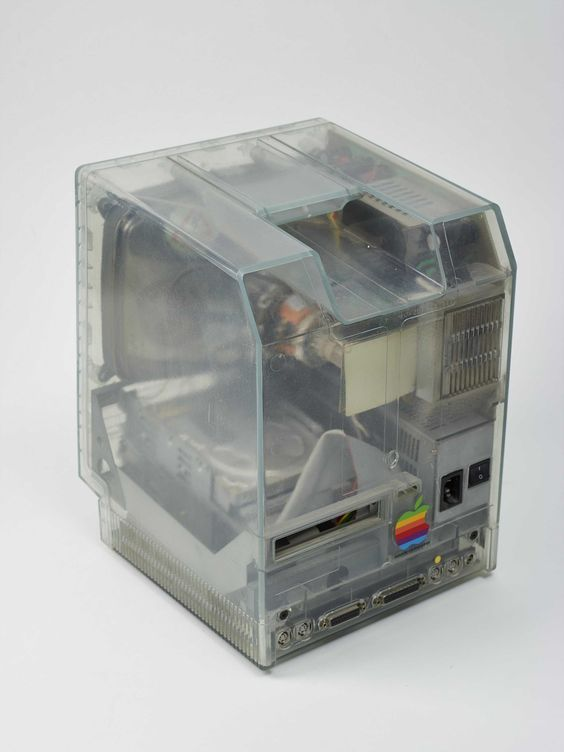
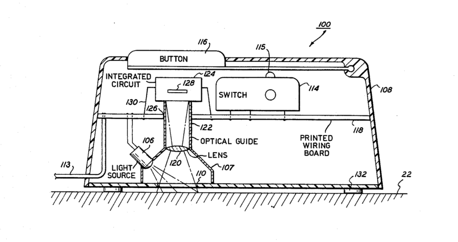
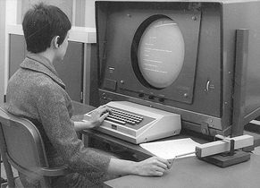
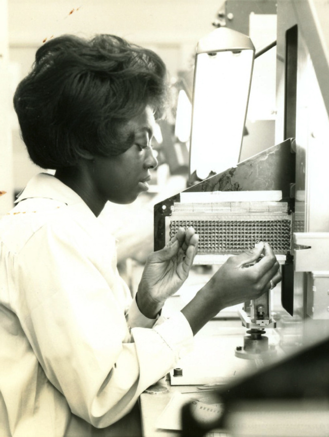
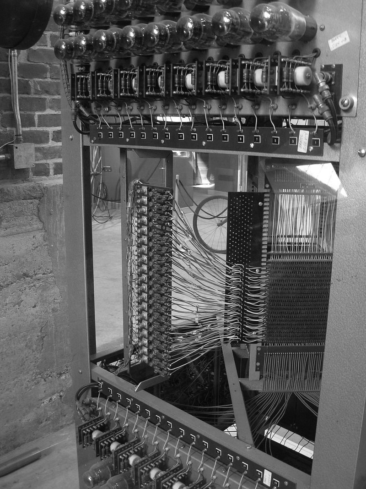
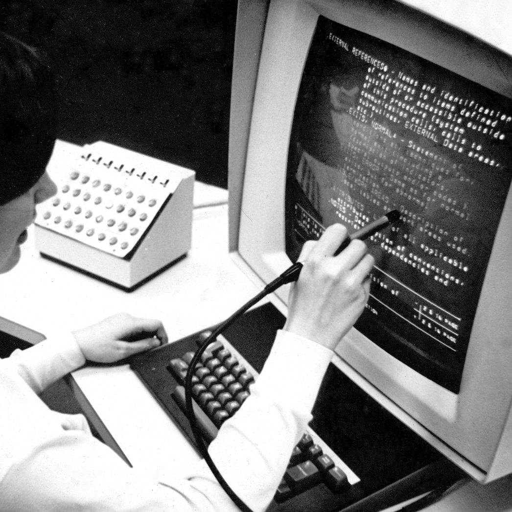
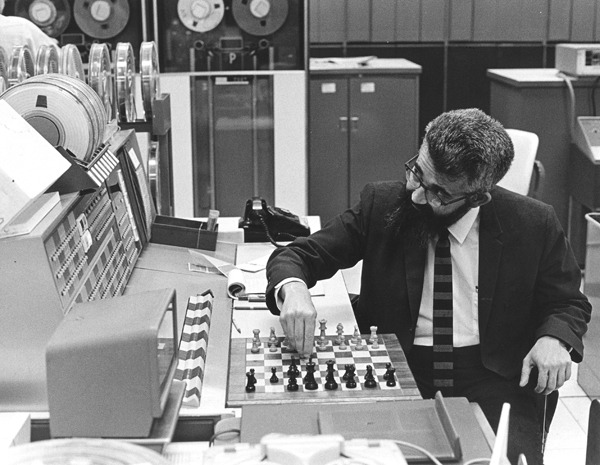
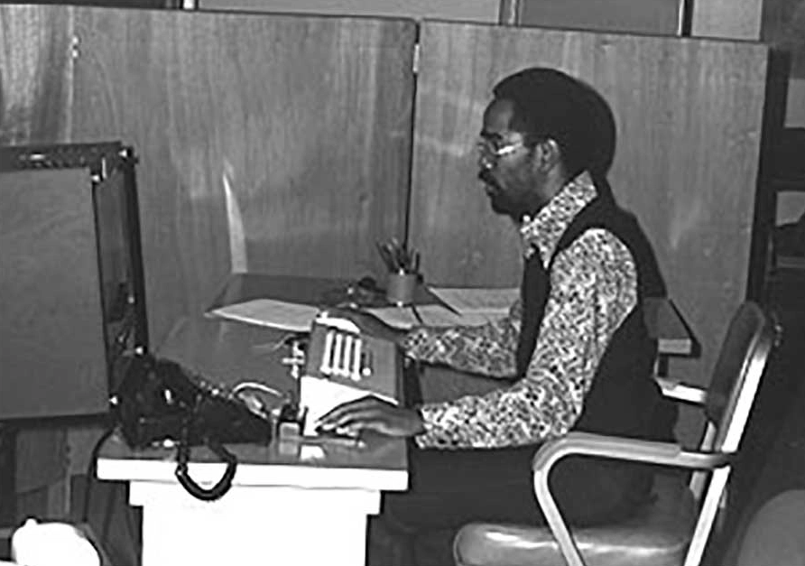
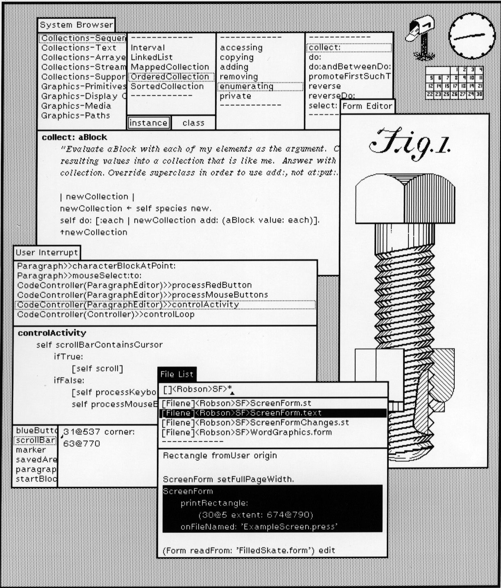
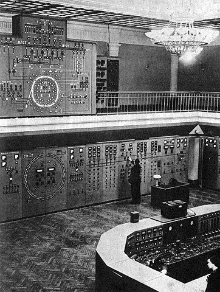
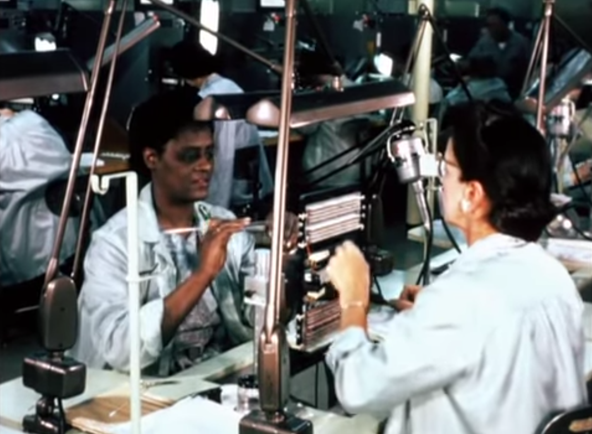